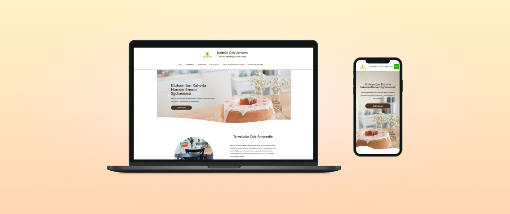
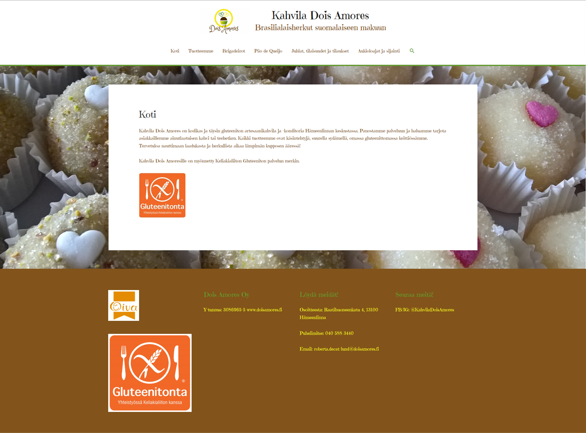
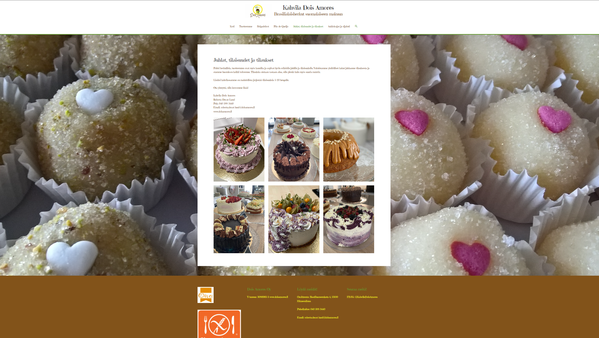
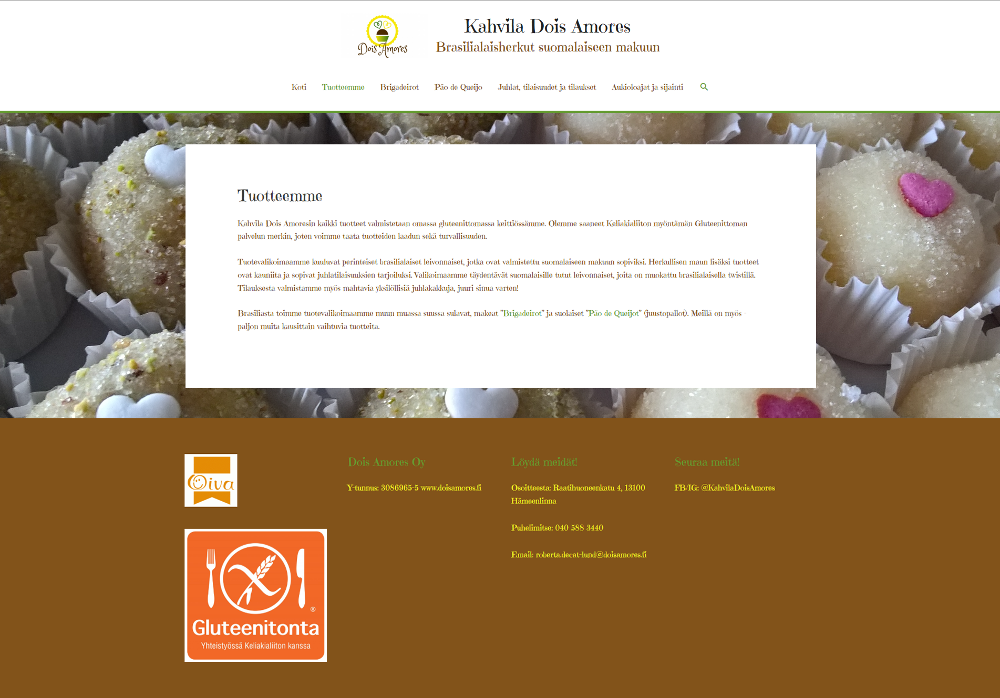
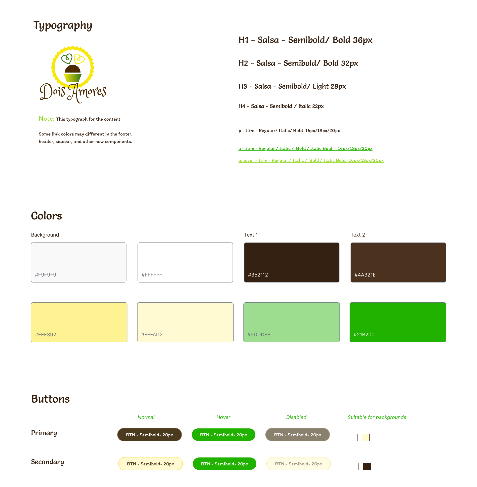
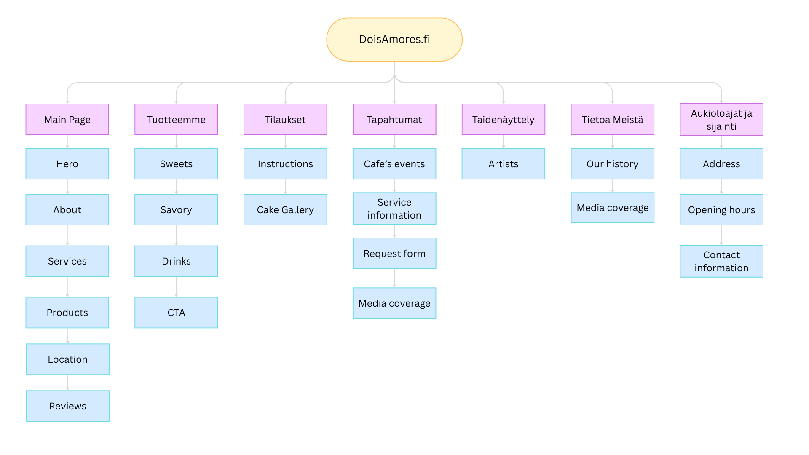
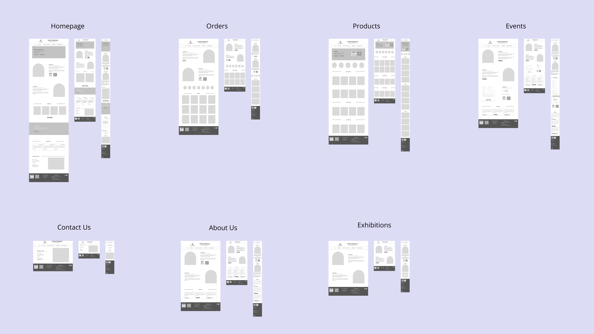

Kahvila Dois Amores — Website

Kahvila Dois Amores is a small café in Hämeenlinna, Finland, specializing in gluten-free pastries and goods inspired by Brazilian recipes and flavours.
My role in this project covered the entire design and implementation process, from developing a new website concept and visual identity to creating an online ordering request flow. I worked on wireframes, high-fidelity mock-ups, and implemented the final designs directly in WordPress, creating a website that the client could maintain independently.
The Challenge
The client wanted to redesign the website to better communicate the café's identity and build a closer relationship with its customers. At the same time, they wanted to make the ordering process more seamless without turning the website into a traditional e-commerce system. This was important because the client wanted to have direct communication with its customers. Customers may have specific requests, while the owner needs to confirm details such as the order, availability, and pickup information before finalizing it.
The website also needed to introduce the café's upcoming events and workshops, while remaining simple enough for the client to manage independently.



The Process
I began with meetings with the client to understand their goals, requirements, existing workflows, and vision for the café. These conversations helped me understand the brand, its customers, and what kind of ordering experience would work realistically for the business.
I also gathered data from the café's social media analytics to better understand its existing clientele. The data showed that a significant portion of the café's customers was aged 45–64. Based on this, I placed particular emphasis on clear information architecture, accessibility, readability, and a straightforward user experience.
One of the key requirements was that orders submitted through the website should not be treated as final purchases. The client wanted to maintain a close relationship with customers and discuss the details of each order directly before confirming it.
Rather than implementing a traditional online shop, I therefore designed the ordering experience around requesting a quote. Because each order required confirmation from the café owner, a traditional checkout experience would have created the wrong expectation for customers. I designed the flow around submitting an order request instead, allowing the owner to confirm availability and details before finalizing the order.
Designing the ordering experience
From there, I moved into:
- Concept & brand direction – Developed a UI kit that included colour palettes, imagery and typography choices that could convey the café's Brazilian-meets-Finnish, gluten-free identity.
- Wireframes – Created the basic structure for the reimagined website with emphasis on information architecture and the ordering flow, keeping it simple enough for a small, non-technical business to manage.
- High-fidelity mock-ups – Refining the visual design based on client feedback.
- Implementation on WordPress – Building the designs directly into a live, editable site the client could maintain themselves.



Outcome
The project resulted in a redesigned website with a clearer structure, stronger visual identity, and a dedicated ordering request flow. The website also introduced dedicated spaces for the café's events, workshops, and future services, helping create a foundation for the business to expand its digital presence.
While there were no quantitative metrics available to measure the impact of the redesign, the final website provided the client with a more cohesive digital presence and a website they could continue to manage and update themselves.
Reflection
This project was particularly valuable because I worked across both the UX/UI design and development sides of the project. Being involved in the implementation helped me understand the practical limitations of WordPress and adapt my designs accordingly rather than treating development as a separate stage.
The project also required me to balance the client's limited resources with their goals for the website. Instead of introducing a complex ordering system, I designed a solution around their existing workflow, allowing customers to submit requests while keeping the final confirmation process personal.
Overall, I enjoyed collaborating closely with the client and creating something that could have a positive impact on the local community by helping promote a small business and making its gluten-free offerings more accessible to potential customers.